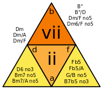

Musical Deltahedra
One day I became curious about musical triads (three note chords) as geometric triangles. I speculated about the actual sizes of the sides, given the intervals between the notes at the corners. Then, in no time, I was off day-dreaming about wobbling, vibrating triangles and string theory...
When I returned from the imaginary physics world to the idealized, Euclidean world, I began to wonder about the musical possibilities of triangle-faced polyhedra (deltahedra). Could chords of three notes fit together nicely, around a (triangle-faced) Platonic solid? How many chords? In what orders? Did Pythagoras ask himself these questions? How about the volume of solids defined by Pythagorean tuning vs equal temperament? And how many notes before chord inversion? 7? 8? 12? What about using the entire scale versus just the notes of the key? How many possible deltahedra are there anyway? Etc until my head exploded.
Then, after picking up the pieces, and in order to get a grip on the issues, I researched interval ratios and scale temperament and wrote the perl module Music::Intervals.
I knew that diatonic chords marched up and down the staff sharing two notes with two other chords: I-vi, ii-vii, iii-I, IV-ii, V-iii, vi-IV, vii-V. In the key of C, I is C major, ii is D minor, iii is E minor, etc. So, I-vi would be the root and its relative minor, sharing the 1st and 3rd notes of the scale.
As you can see from this ribbon of triangles representing the seven diatonic chords, linked by two notes left and right, odd cycles make Möbius strips. This was not part of my investigation - just cool in itself.
Anyway, I concluded that the simplest Platonic solid, the tetrahedron, could represent this "relative chord" relationship. Its vertexes would be four notes, making the two other faces "odd" chords.
Would these "odd" chords be transitional or substitution chords in some song structure? Would "composing" music with four sided dice be interesting?
Curiosity may or may not have killed Schrödinger's cat.
There are a lot of scholarly papers on geometric music and the underlying math. These are (mostly) all fascinating in themselves.
I decided to focus on a simple yet meaningful set of notes: c, d, e, f, g, a and b. Since that is seven, I knew I was in for some disjoint subsets, given that the deltahedral Platonic solids have an even number of faces. Fortunately, I embrace odd-meter and polyrhythm and I was prepared.
Check out the 7 net diagrams of my "4 notes defining 4 chords" tetrahedra. (The outer notes are all the same and fold back to touch and make the four sided, rotating figure above.)

The faces are chords, within the key of C major tonality. The "outside" note ("a" in the first diagram) is connected to the inner triangle, which is I or "C major", and makes vi or "A minor", in the first diagram. The chords come from the perl module Music::Chord::Namer.
So ok, seven notes is not great for making chords. You have to start inverting when you get to the middle of the scale. Having more notes in your bag is musically better. This means that we need a lot more "real estate" on our deltahedra - more triangles.
More questions: Contiguous chords (i.e. with my chord ribbon above) are fine but what other chord patterns with shared notes are there and how can they be mapped to deltahedra? What are the parameters and limits? And what about tesselation and space-filling?
Next: Mapping musical triads to deltahedra of more than four faces!
(Regarding this: My tiny brain could not juggle the vertex-linked geometric possibilities, I am not a combinatorics whiz and wanted tangibility. So I bought a few Polydron Frameworks geometry sets. Ha.)